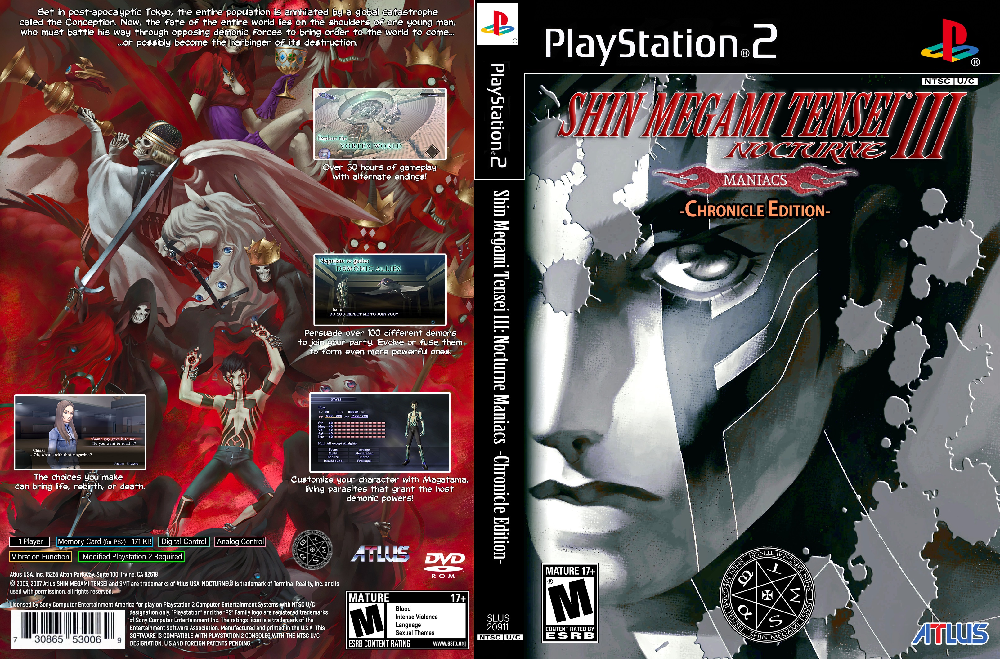
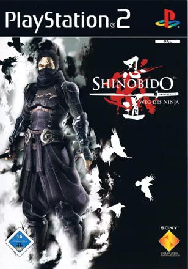
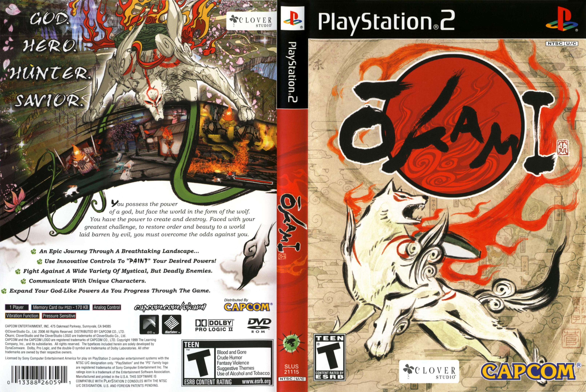

TOP 5 Game Underrated ps2 dengan gameplay menarik yang tidak banyak diketahui orang
PS2 atau PlayStation 2 adalah sebuah konsol yang sangat booming pada
masanya yang dimulai pada awal rilisnya pada tahun 2000 awal. dengan banyaknya game yang dirilis pada konsol tersebut,
tidak semua game mendapatkan perhatian yang layak. Pada kesempatan ini kita akan membahas beberapa game yang tidak banyak diketahui orang
namun tidak kalah menarik dengan beberapa title populer dari konsol tersebut.
1. Shadow of the collosus
SOTC Cover
Shadow of the Colossus adalah sebuah game buatan Team Ico yang dirilis pada tanggal 26 Oktober 2004.
Game ini menceritakan kisah Wander yang harus melawan 16 colossus di sebuah tempat yang penuh misteri bernama forbidden land.
Gameplay dari game ini bisa dibilang sangat unik dan menarik, karena setiap pertarungan dengan colossus memberikan pengalaman yang berbeda.
tidak hanya itu, pada saat kita menjelajahi forbidden land untuk mencari colossus-colossus yang ada, kita dapat melihat dunia
dari game Shadow of the Colossus ini terasa sangat indah untuk game pada era tersebut.
2. Shin Megami Tensei 3: Nocturne

Shin Megami Tensei 3 Cover
Shin Megami Tensei 3: Nocturne adalah game RPG yang dikembangkan oleh Atlus deveplor yang sama dengan yang membuat seri persona
dan dirilis pada tanggal 28 April 2003. Game ini menjadi salah satu game underrated di PS2 dengan total penjualan yang tidak terlalu tinggi dibandingkan dengan beberapa game populer lainnya.
Shin Megami Tensei 3 menawarkan pengalaman bermain yang unik dengan sistem combat yang kompleks dan cerita yang mendalam.
3. Shinobido: Way of the Ninja

Shinobido Cover
Shinobido: Way of the Ninja adalah game aksi yang dikembangkan oleh Acquire Corp dan di publish oleh Spike Co. Ltd yang dirilis pada tanggal 27 Oktober 2005.
Game ini menjadi salah satu game underrated di PS2 dengan total penjualan yang tidak terlalu tinggi dibandingkan dengan beberapa game populer lainnya.
Shinobido menawarkan pengalaman bermain yang unik dengan gameplay stealth yang menantang dan cerita yang menarik tentang seorang ninja yang harus menyelesaikan berbagai misi untuk bertahan hidup.
4. Okami

Okami Cover
Okami adalah game RPG yang dikembangkan oleh Clover Studio dan dirilis pada tanggal 28 Desember 2006. Game ini menjadi salah satu game underrated di PS2 dengan total penjualan yang tidak terlalu tinggi dibandingkan dengan beberapa game populer lainnya.
Okami menawarkan pengalaman bermain yang unik dengan grafis yang indah dan cerita yang menarik tentang seorang dewi yang harus melindungi negeri mereka dari kejahatan.
5. ICO
ICO Cover
ICO adalah game yang dikembangkan oleh Studio Genki dan dirilis pada tanggal 22 Oktober 2001 oleh Sony Computer Entertainment.
ICO memperkenalkan konsep open-world sandbox yang menjadi standar industri hingga saat ini, dengan gameplay aksi yang inovatif dan cerita yang menarik.